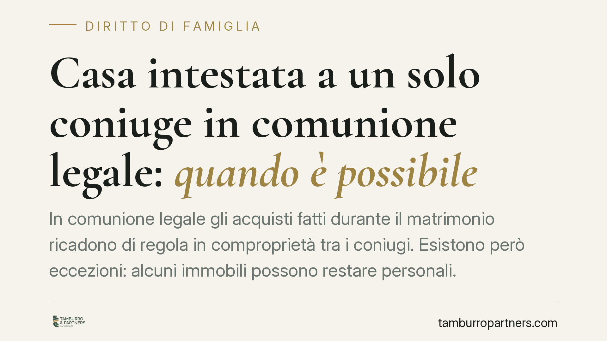

Casa intestata a un solo coniuge in comunione legale: quando è possibile
In comunione legale gli acquisti fatti durante il matrimonio ricadono di regola in comproprietà tra i coniugi. Esistono però eccezioni: alcuni immobili possono restare personali. Capire quando ciò accade, e a quali condizioni, evita contenziosi futuri e dichiarazioni azzardate nell'atto notarile che possono essere contestate.

La regola generale: gli acquisti cadono in comunione
Chi è sposato in regime di comunione legale deve partire da un punto fermo. L'art. 177 del Codice civile stabilisce che formano oggetto della comunione gli acquisti compiuti dai coniugi, insieme o separatamente, durante il matrimonio.
Questo significa che, di norma, anche l'immobile acquistato e intestato a uno solo dei due coniugi entra automaticamente nella comunione. L'intestazione formale in atto non basta, da sola, a rendere il bene personale.
Le eccezioni dell'art. 179 c.c.
L'art. 179, primo comma, individua i beni che restano personali e non cadono in comunione. Tra questi rientrano, alle lettere a)-f): i beni posseduti prima del matrimonio; quelli acquisiti per donazione o successione; i beni di uso strettamente personale; i beni che servono all'esercizio della professione; i beni ottenuti a titolo di risarcimento del danno; e i beni acquistati con il prezzo del trasferimento o dello scambio di beni personali.
L'ultima ipotesi è quella che più interessa chi vuole intestarsi la casa da solo. Se l'acquisto è finanziato con denaro proveniente dalla vendita di un bene personale — ad esempio un immobile ricevuto in eredità o posseduto prima delle nozze — il nuovo immobile può restare escluso dalla comunione.
Per gli acquisti di beni immobili (o mobili registrati), l'art. 179, secondo comma, richiede però una condizione ulteriore: l'esclusione dalla comunione deve risultare dall'atto di acquisto e il coniuge non acquirente deve parteciparvi.
Dichiarazione confessoria e dichiarazione ricognitiva
La partecipazione del coniuge non acquirente all'atto ha una funzione precisa. La sua dichiarazione, secondo l'orientamento consolidato delle Sezioni Unite della Cassazione (riferimento comunemente indicato a Cass. S.U. n. 22755/2009, da verificare in sede redazionale), va distinta a seconda di ciò che attesta.
Quando il coniuge riconosce la natura personale del denaro impiegato — ad esempio che proviene da una sua eredità — la dichiarazione ha valore confessorio: fa piena prova, contro chi la rende, dei fatti dichiarati.
Quando invece il coniuge si limita a prendere atto dell'intento di escludere il bene dalla comunione, senza attestare la reale provenienza del denaro, la dichiarazione ha solo valore ricognitivo. In tal caso l'esclusione può essere contestata in giudizio dimostrando che, in realtà, i requisiti dell'art. 179 non sussistevano.
La presenza del coniuge nell'atto serve dunque a rendere opponibile l'esclusione, ma non a sanare una situazione che, nei fatti, non corrisponde alle condizioni di legge.
Cosa cambia in concreto
Per chi intende acquistare da solo un immobile restando in comunione, il nodo pratico è duplice.
Da un lato occorre che il presupposto sostanziale esista davvero: il denaro deve provenire in modo tracciabile da un bene personale. Dall'altro, la provenienza va documentata e formalizzata nell'atto con la partecipazione del coniuge.
Una dichiarazione non veritiera — ad esempio l'attestazione di una provenienza personale del denaro che in realtà è comune — espone a conseguenze. Sul piano civilistico l'atto e la relativa dichiarazione possono essere impugnati dal coniuge o dai suoi aventi causa, con il rischio che il bene venga ricondotto alla comunione. La valutazione di eventuali profili ulteriori va rimessa a un esame del caso concreto.
Cosa fare in concreto
- Verificate il vostro regime patrimoniale: controllate se siete in comunione o separazione dei beni consultando l'atto di matrimonio o l'estratto anagrafico.
- Ricostruite la provenienza del denaro: conservate la documentazione (atto di vendita del bene personale, dichiarazione di successione, estratti conto) che dimostri la natura personale delle somme.
- Curate la tracciabilità: evitate movimentazioni su conti cointestati o passaggi che confondano il denaro personale con quello della comunione.
- Inserite la dichiarazione di esclusione nell'atto: chiedete al notaio di formalizzare espressamente l'esclusione dalla comunione ai sensi dell'art. 179 c.c.
- Fate partecipare il coniuge all'atto: la sua presenza è condizione di opponibilità dell'esclusione per gli immobili.
Consigliamo di affrontare queste operazioni con il notaio rogante e, dove utile, con un confronto legale preventivo, così da valutare la solidità del presupposto prima della stipula.
---
Contributo informativo a cura di Tamburro & Partners - Avv. Giuseppe Tamburro. Non costituisce parere legale.
Ogni famiglia ha il suo equilibrio.
Separazione, divorzio, affidamento, assegno: se vuoi un confronto riservato su una specifica situazione, scrivi allo studio. Ti rispondiamo entro un giorno lavorativo.